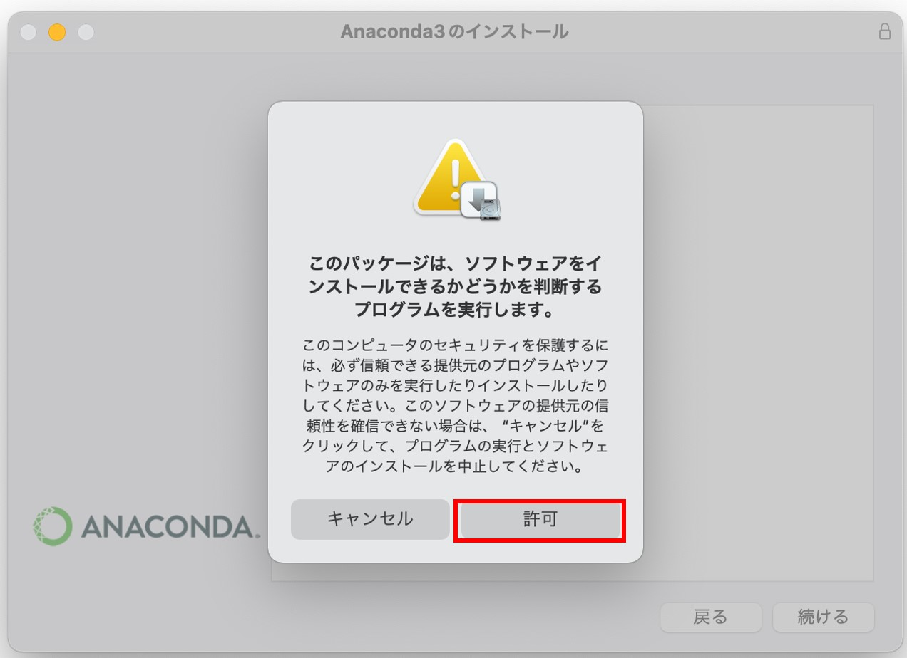
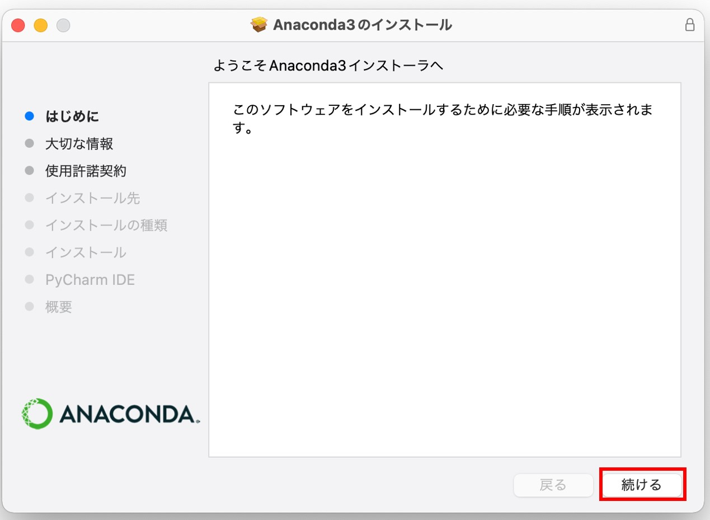
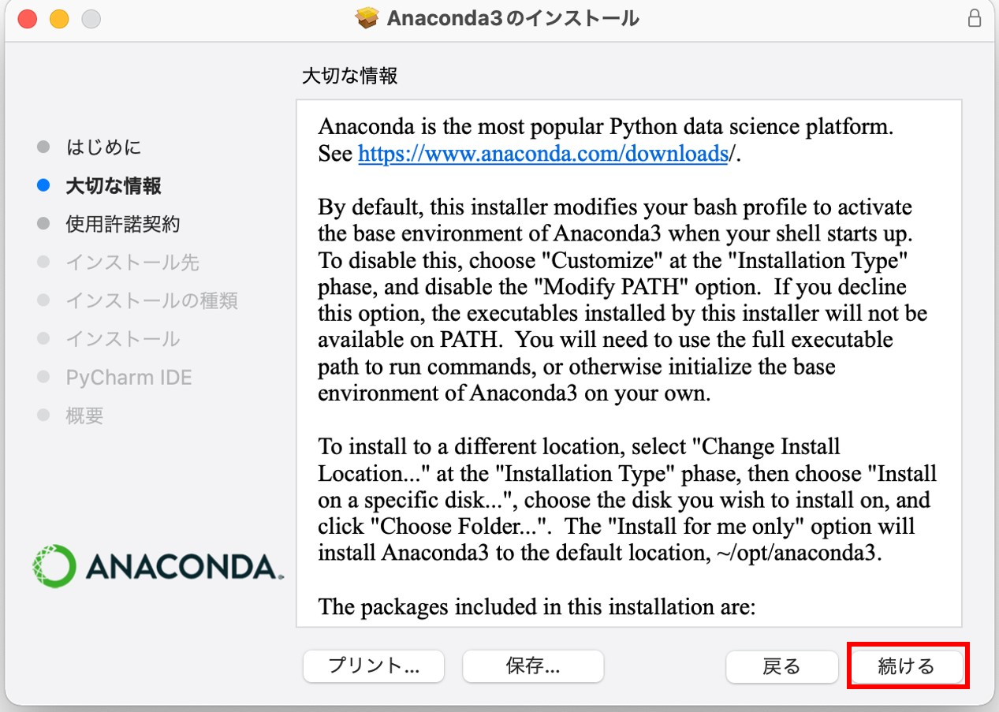
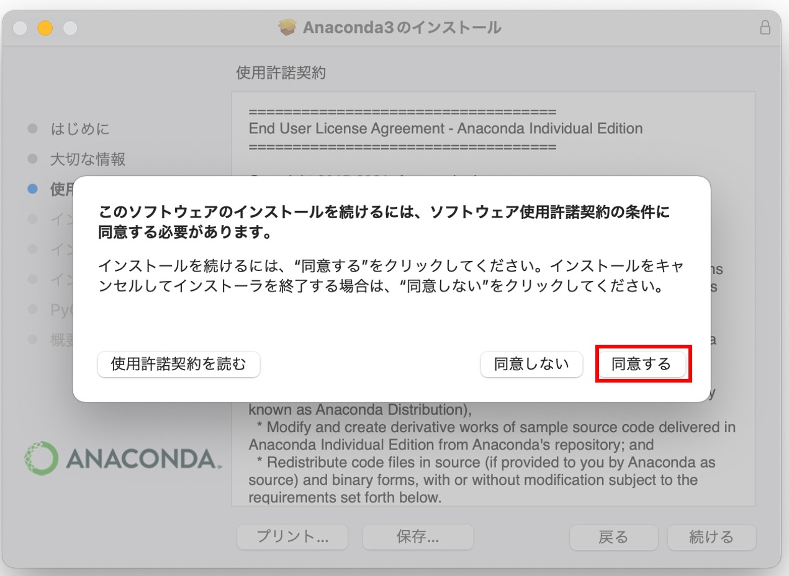
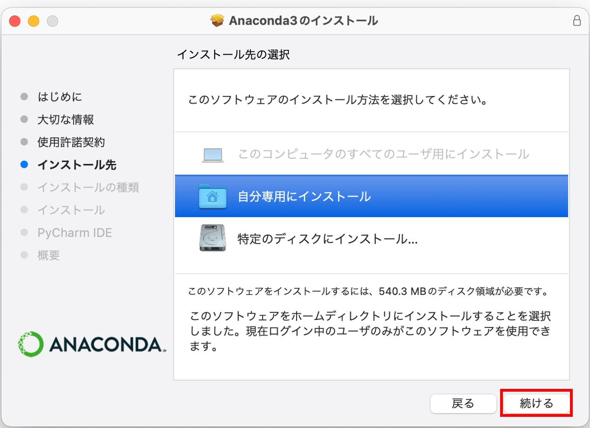
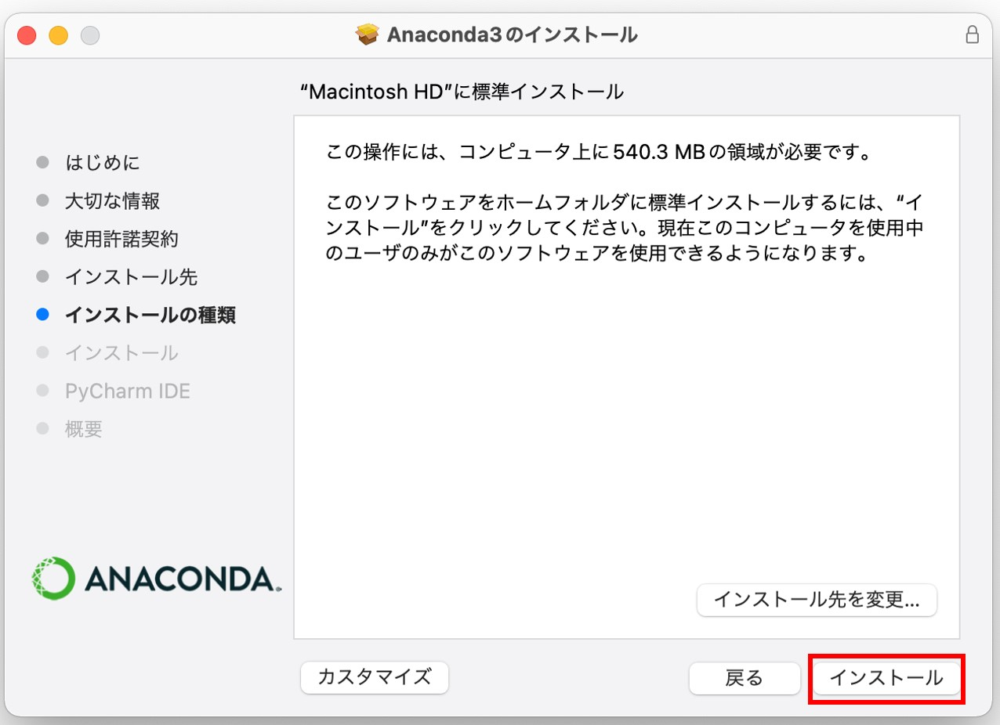
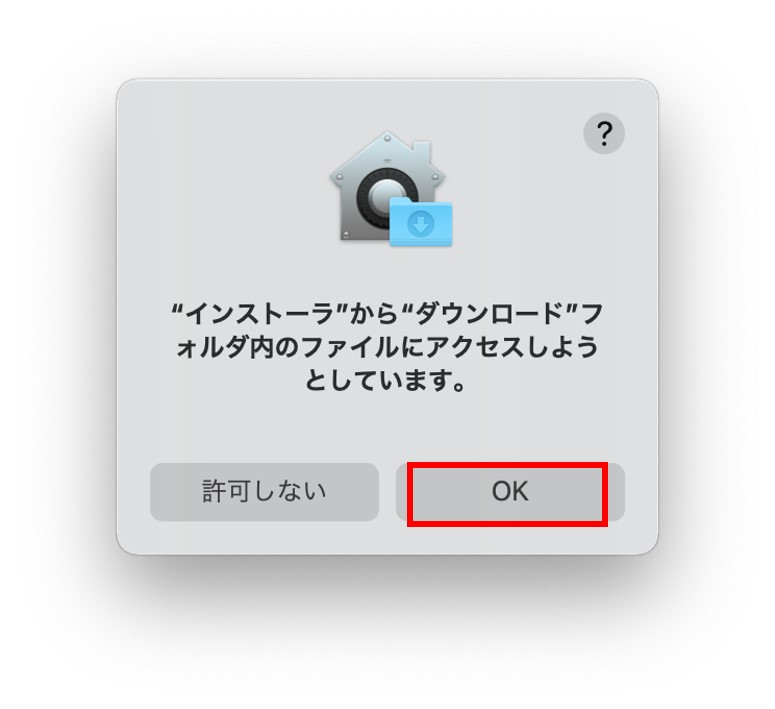

気象データ解析のためのPython環境構築(For MacOS X)
謝辞：研究室M2の吉村さんに確認やインストール画面の提供をしてもらいました。ご協力ありがとうございました。
このページでは2022年度のVL講習会向けに，Anacondaを使ってPython環境構築する場合の一例をまとめています。
Monterey(12.2.1)でテストしましたが，他のバージョンでも概ね同じ方法によりインストールできるはずです。
参考：Pyhon Japan「MacOS版Anacondaのインストール」
*全部インストールすると10 GB近くになります。インストール前にHDD(SSD)の容量確認することをおすすめします。
- Anacondaをインストールする
- 解析用の仮想環境を構築する
- 構築した仮想環境への移動
- 研究に必要なツールのインストトール
- netCDF4 (ERA5などで使われているデータ形式であるnetCDFを扱うためのライブラリ) 公式ドキュメント
- cfgrib (JRA-55などのデータ形式であるGRIBを扱うためのライブラリ) 公式ドキュメント(GitHub)
- jupyterlab (Pythonの開発・実行環境) 公式ドキュメント
- metpy (気象データの解析に特化したライブラリ) 公式ドキュメント
- ライブラリがインストールできたかどうか確認する
- conda-forgeからのインストールを最優先させる
- その他(以下の設定は任意)
- Py-ART: 気象レーダデータ解析・可視化ライブラリ公式ドキュメント
- PyBufrKit: PythonでBUFRフォーマットのデータ(気象庁ウィンドプロファイラ等)をデコードする 公式ドキュメント
- Satpy: 衛星データの処理・可視化ライブラリ 公式ドキュメント
ここからAnacondaのインストーラをダウンロードする(Linuxの場合はシェルスクリプト)。
"64-Bit Graphical Installer"を選択
"許可"をクリックするとインストールが始まる
"続ける"をクリック
"続ける"をクリック
"続ける"をクリック
"同意する"をクリック
"自分専用にインストール"を選択し，"続ける"をクリック
"インストール"をクリック
"インストール先を変更"はしなくてよい
割と時間かかります
このようなポップが出てくるので"OK"をクリック
"続ける"をクリック
インストール成功，"閉じる"をクリック
インストーラーはもう使わないのでゴミ箱に入れる

(base)と表示されていればインストール成功です
(base)と表示されない場合，ターミナルで以下のコマンドを実行してanacondaを有効にできるか確認する。
/User/user/opt/anaconda3/bin/conda init zsh #userにはユーザー名が入る
zsh(デフォルト)以外のシェルを使用している場合，zshを適切なシェルの名称に置き換えること。
仮想環境を構築し，必要なライブラリのみをインストールすることでバージョン管理などが容易になる。仮想環境の構築はターミナル上で以下のように実施する。
conda create -n vl_lab -c conda-forge python=3.9
途中"Proceed ([y]/n)?"ときかれる。yを入力してからエンターを押すと仮想環境構築が始まる。
この場合"vl_lab"という名前の環境が作られ，環境構築時にpython3.9がインストールされる(vl-labは任意の名前に変えても良い)。 -nは環境名を指定するオプション，-cはライブラリのインストール元を指定すオプションである(今回はconda-forgeを使う)。
以降，"vl_lab"という仮想環境を作ったものとする。conda activateを実行することで仮想環境に切り替わる。
(base) conda activate vl_lab (vl_lab) #Activateした仮想環境に切り替わる
気象データの解析に必要なライブラリをvl_lab環境にインストールする。numpyやmatplotlibなど主要なものは以下のものをインストールする際に依存関係(あるライブラリが動作するために必要なライブラリ)で一緒にインストールされる。
仮想環境がvl_labであることを確認した後(ターミナルの先頭が(vl_lab)であれば良い)，以下のコマンドを順番に実行する。-c conda-forgeはconda-forgeからインストールすることを示し，-yはインストールの確認をスキップするオプションである。
conda install -y -c conda-forge netCDF4
conda install -y -c conda-forge cfgrib
conda install -y -c conda-forge jupyterlab
conda install -y -c conda-forge metpy
ここではpython3のインタラクティブモードでライブラリをインポートすることにより確認する。 *#はコメント(入力しなくて良い)
(vl_lab) python3 #Python 3.9.10 | packaged by conda-forge | (main, Feb 1 2022, 21:24:11) #[GCC 9.4.0] on linux #Type "help", "copyright", "credits" or "license" for more information. >>> import numpy >>> import matplotlib >>> import pandas >>> import xarray >>> import cfgrib >>> import metpy >>> import netCDF4 >>> exit() #インタラクティブモードを終了する。
エラーメッセージ等が表示されなければインストールが成功している。
"ModuleNotFoundError: No module named ライブラリ名" とエラーが出てきた場合，そのライブラリを再度conda installによりインストールしてからもう一度確認してみる。
先ほどはcオプション(-c conda-forge)により全てのライブラリをconda-forgeからインストールするよう指定していた。cオプションで指定しなかった場合，初期設定ではDefaultsチャンネルからインストールするようになっている。Defaultsチャネルとconda-forgeチャネルのライブラリは互換性はあるが100%ではないため，混ぜると不具合が生じることがある。
したがって，ここではデフォルトで全てのライブラリをconda-forgeからインストールするための設定をおこなう。
conda config --add channels conda-forge #conda-forgeをインストール時に最優先で参照するチャネルとして追加 conda config --set channel_priority strict #conda-forgeから全てのライブラリや依存関係をインストールする conda config --get channels #現在のチャンネル設定の表示 #--add channels 'defaults' # lowest priority #--add channels 'conda-forge' # highest priority
以上により，conda-forgeが最優先で参照するチャネルとなった。これ以降，-c conda-forgeを入力しなくてもconda-forgeからインストールされるようになる。
・ターミナル起動時にanacondaを起動しないようにする
デフォルトではターミナルを開いた際に自動でanacondaが起動する。自動で起動させないようにするためには以下のコマンドを実行する。
conda config --set auto_activate_base false
これで次回ターミナル起動時から自動でanacondaが起動しなくなる。起動する場合
conda activate (base) #anaconda起動
とすることでanacondaが起動する。逆に自動起動を有効にしたい場合は
conda config --set auto_activate_base true
とすると，次回以降自動でanacondaが起動するようになる。
・その他気象データ解析に使いそうなライブラリのインストール
以下は必要に応じてインストールしてください
*日本のレーダデータを処理するにはCF-Radial形式等に変換をする必要がある。
conda install -y -c conda-fogre arm_pyart
anacondaにないのでpipからインストールする
pip install pybufrkit
conda install -y -c conda-forge satpy